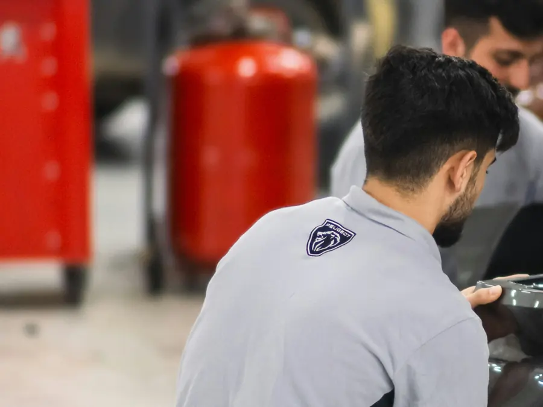
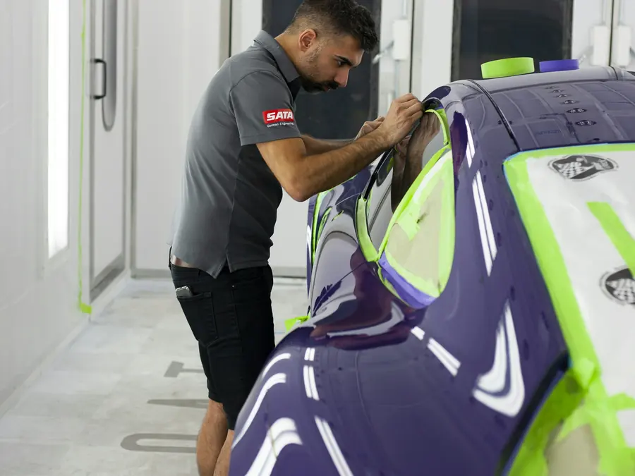
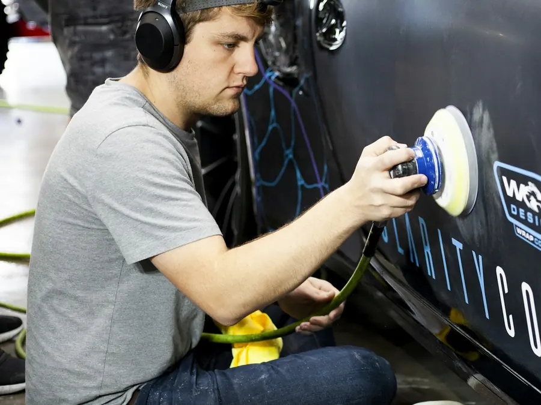

Karosszérialakatos mester vezetésével, 1990 óta
Karosszériajavítás és fényezés Pécsen, teljes körű kárügyintézéssel
Kárfelvétel a telephelyünkön, javítás és fényezés egy helyen – a biztosítóval mi intézünk mindent.
Kárfelvétel a telephelyen
Nem kell külön kárszakértőhöz mennie: a kárfelvétel nálunk történik, a javítási kalkulációt mi készítjük el.
Díjtalan beszállítás Baranyában
Baranya megyén belül a sérült autó telephelyünkre szállítása díjtalan.
Szélvédőcsere önrész nélkül
A szélvédő és az oldalüvegek cseréje önrész nélkül.
Mit kap, ha nálunk javíttat?
A kedvezmény attól függ, ki fizeti a javítást. Válassza ki az esetét, és megmutatjuk, mire számíthat.
Válasszon egyet:
A másik fél biztosítója fizet
A javítási összeg 10%-át Önnek adjuk
…vagy egy plusz elem javítását vállaljuk, a kárösszegtől függően. Alkatrészavulást nem kell fizetnie.
Saját CASCO-ra javíttat
Önrészfizetési kedvezmény, legfeljebb 100 000 Ft-ig
A kedvezmény a kárösszeg nagyságától és a szerződésben vállalt önrész összegétől függ. Alkatrészavulást nem kell fizetnie.
Cégeknek
15% autóflotta-kedvezmény a javítás munkadíjából
Céges autóknál biztosítási kár esetén a javítás után csak a kedvezményes önrészt vagy az esetleges avulást, valamint az áfát kell kifizetni.
Szélvédő és oldalüveg
Csere önrész nélkül
A szélvédő és az oldalüvegek cseréjét önrész nélkül végezzük.
A részletekért érdeklődjön elérhetőségeinken.
Így intézzük el a kárt
Levesszük a válláról a bürokratikus és anyagi terheket.
- Kárfelvétel a telephelyenAz autót megnézzük, és felvesszük a kárt.
- MeghatalmazásKitölt egy meghatalmazást, hogy a biztosítóval mi tárgyalhassunk.
- Javítási kalkulációA kárfelvételi jegyzőkönyv alapján, a minden biztosító által elfogadott Audatex, AudaShare rendszerrel.
- Banki engedély, ha hitel van az autónMegkérjük a banktól. Feltétele, hogy ne legyen díjelmaradás.
- Alkatrész és javításA jogalap tisztázása után, Önnel egyeztetve beszerezzük az alkatrészeket, és megkezdjük a javítást.
- ÁtvételCsak a kedvezményes önrészt vagy az esetleges avulást fizeti (cégek az áfát), és a telephelyen átveszi a kulcsrakész autót.
Mit hozzon a kárbejelentéshez?
Pipálja ki, ami már megvan, hogy semmi ne maradjon otthon.
Teljes körű karosszériajavítás egy helyen
Karosszérialakatos és fényezési munkák a kis horpadástól a karambolos autóig.

Karambolos javítás
Kárfelvételtől a kész autóig, biztosítási ügyintézéssel.

Karosszériajavítás, húzópad
Húzópados helyreállítás, karosszériaelemek javítása és cseréje.

Teljes és javító fényezés
Egy elem vagy az egész autó, a gyári színhez igazítva.

Polírozás
A fényét vesztett, karcos fényezés felfrissítése.
Minden szolgáltatásunk
- Telephelyen történő kárfelvétel
- Karambolos javítás
- Karosszériajavítás, átalakítás
- Jégkár javítás
- Húzópados helyreállítás, bérhúzás
- Alkatrészbeszerzés – gyári, utángyártott, bontott, igény szerint
- Műanyagjavítás és -hegesztés
- Szélvédő és oldalüvegek cseréje önrész nélkül
- Teljes és javító fényezés
- Polírozás
- Baranya megyén belül díjtalan telephelyre szállítás
1990 óta, mesteri kézben
„Magas szakmai színvonalon, minőségi anyagokkal, rövid határidővel dolgozni.”
Üzleti filozófiánk – Molnár János karosszérialakatos mester
36 értékelés a Google-on. Ügyfeleink a gyors, szép munkát, a felkészült szakembereket és a gyors ügyintézést emelik ki – van, aki szerint egy egyedi, ritka munka is „meglepően olcsón” készült el.
Molnár János karosszérialakatos mester 1990-ben egyéni vállalkozóként kezdte a munkát. Átalakulás után, 1993. október 1. óta Mol-Car Kft. néven áll szakszervizünk az ügyfelek rendelkezésére.
Profilunk a teljes körű autókarosszéria-javítás, a karosszérialakatos és a fényezési munka, a biztosítási kárügyintézéssel együtt.
Szerződéses biztosítóink
Korrekt üzleti kapcsolatot alakítottunk ki az összes Magyarországon működő biztosítótársasággal is.
Gyakori kérdések
Ha nem találja a választ, hívjon minket.
Mely biztosítókkal állnak szerződésben?
Szerződésünk van az Allianz Hungária, a Generali-Providencia és a Groupama-Garancia biztosítóval, és korrekt kapcsolatot ápolunk az összes Magyarországon működő biztosítótársasággal.
Mit hozzak a kárbejelentéshez?
Baleseti bejelentőt (kék-sárga), jogosítványt, személyi igazolványt, forgalmi engedélyt és a gépjármű-kárbejelentési adatlapot. Vállalkozás esetén aláírási címpéldányt, hitel, lízing vagy banki terhelés esetén a hitelintézet nevét.
Mennyit kell fizetnem a javítás után?
Biztosítási kárnál a javítás után csak a kedvezményes önrészt vagy az esetleges avulást kell kifizetnie, cégek esetében az áfát. Utána a kulcsrakész autót a telephelyünkön átveheti.
Hogyan jut el a sérült autó a műhelyhez?
Baranya megyén belül a telephelyünkre szállítás díjtalan.
Mikor vannak nyitva?
Hétfőtől csütörtökig 7:00 és 15:30, pénteken 7:00 és 15:00 között.
Kapcsolat
- 7628 Pécs, Szent Borbála u. 31.Útvonaltervezés
- Telefon és fax72/238-338
- Mobil30/298-2126
- E-mailmolcar@molcar.hu
Nyitvatartás
| Hétfő–csütörtök | 7:00–15:30 |
| Péntek | 7:00–15:00 |
| Szombat–vasárnap | zárva |